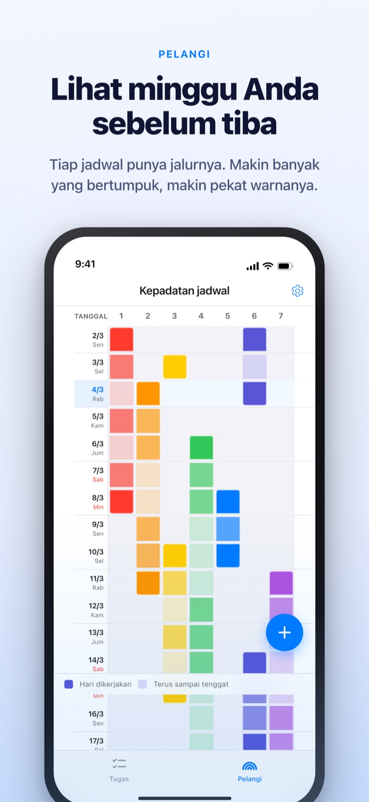
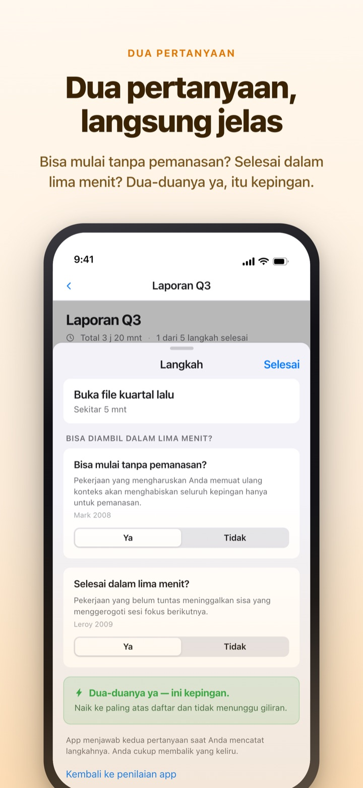
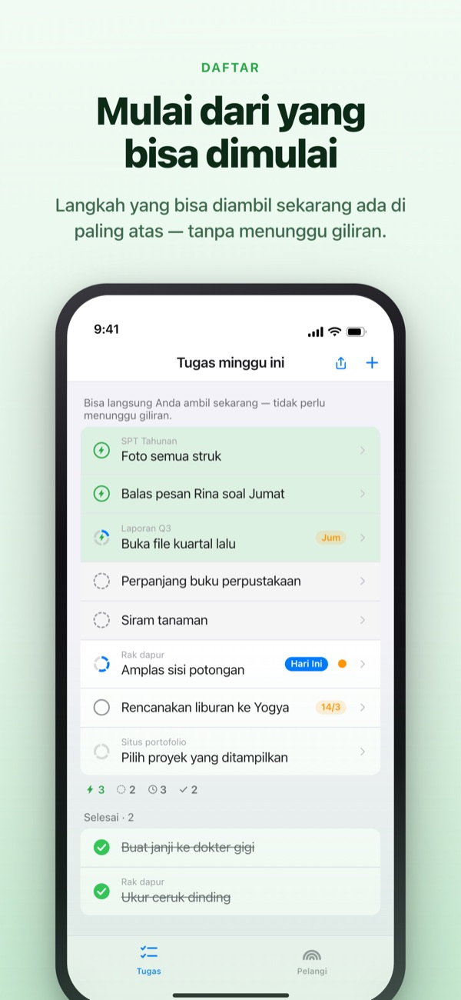
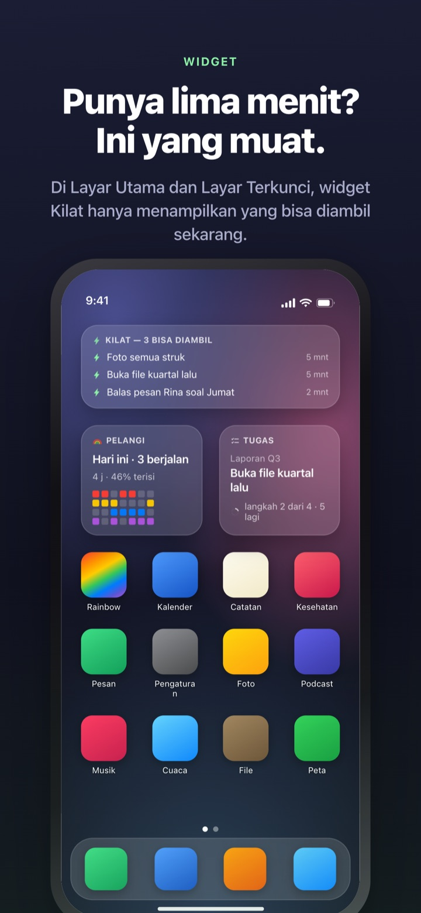

Lihat minggu padat sebelum tiba.
Pakai lima menit yang kamu punya.
Makin banyak pekerjaan yang bertumpuk, makin pekat warna pelanginya. Pecah tugas besar jadi langkah, dan langkah yang bisa dikerjakan di sela waktu sudah menunggu di paling atas.
Pelangi, memecah tugas, timer, dan sinkron dengan Mac gratis.

Coba pilah sendiri
"Laporan Kuartal 3" sudah dipecah jadi lima langkah. Pilih satu, ubah durasinya, atau balik jawabannya. Hanya langkah yang dijawab ya untuk kedua pertanyaan yang jadi kepingan, bisa kamu ambil dalam lima menit.
Kalender terlihat kosong, tapi minggunya bikin sesak napas?
Kalender hanya memberi tahu ada jadwal atau tidak, bukan seberapa banyak yang menumpuk di atasnya. Tiga tenggat jatuh di minggu yang sama sering baru ketahuan saat sudah di dalamnya, dan lima menit luang di sela-selanya habis untuk membaca ulang daftar tugas. Rainbow of Desire menggambar minggumu sebagai kisi, menggelapkan bagian yang tumpang tindih, dan menyisihkan langkah yang muat di sela waktu.
Dua pertanyaan, langsung jelas
Saat kamu memecah tugas besar, setiap langkah ditanya dua hal. Bisa mulai tanpa pemanasan? Selesai dalam lima menit?
Hanya yang dijawab ya dua kali yang jadi kepingan. App menjawab lebih dulu dari durasi dan kata-katamu, kamu cukup membalik jawaban yang salah.

Ada sela waktu? Lihat paling atas
Geser tugas ke kanan untuk memberinya kilat, dan tugas itu menyalip antrean ke paling atas. Tidak perlu membaca seluruh daftar.
Apakah langkah saling menunggu, kamu tentukan sekali per kelompok. Berurutan menampilkan langkah pertama yang belum selesai, Bebas urutan menampilkan kepingan yang bisa diambil sekarang.

Terlihat tanpa membuka app
Timer menghitung sampai acara selesai, dan sisa waktunya juga tampil di Dynamic Island dan Layar Terkunci.
Widget Layar Utama dan Layar Terkunci menampilkan tugas yang sedang dikerjakan, yang muat dalam lima menit, dan pelangi minggu ini. (Widget termasuk Pro)

Mulai dalam tiga langkah
- 1
Tarik jadwal
Tekan lama sel kosong di hari mulai, lalu ketuk hari selesai. Satu garis muncul di pelangi.
- 2
Pecah tugas besar
Ketuk tugas, tulis langkahnya, dan pilih durasi. Dua pertanyaan dijawab app lebih dulu.
- 3
Saat luang, lihat atas
Kepingan dan tugas berkilat berkumpul di atas tanpa menunggu giliran.
Istilah yang akan kamu temui
- Sel pekat · sel pucat
- hari kamu benar-benar mengerjakannya, dan sisa rentang sampai tanggal selesai
- Satu baris penuh
- hari dengan begitu banyak yang berjalan bersamaan sehingga satu molor, semua ikut molor
- Kepingan
- ya untuk kedua pertanyaan; ambil saat ada lima menit
- Sesi fokus singkat
- tidak perlu pemanasan, tapi tidak selesai dalam satu kepingan; tuntaskan sekali duduk
- Sesi fokus
- perlu pemanasan atau 45 menit lebih; taruh di waktu yang sudah disisihkan
- Kilat
- tanda "sekarang juga" buatanmu sendiri; melompat ke atas
- Berurutan · Bebas urutan
- apakah langkah saling menunggu, ditentukan sekali per kelompok
- Catatan Waktu Kembali
- rekap mingguan: sisa pekerjaan, waktu yang kembali, dan istirahat, dicatat terpisah dan tidak dijumlahkan
Waktu dijumlah dari bawah ke atas: durasi sebuah tugas adalah jumlah langkah-langkahnya.
Yang kamu perlukan untuk hari ini gratis
Gratis
- Pelangi (kisi kepadatan jadwal)
- Memecah tugas jadi langkah dan dua pertanyaan
- Kilat dan urutan langkah
- Timer di Dynamic Island dan Layar Terkunci
- Sinkron dengan Rainbow Craft di Mac lewat iCloud
- Catatan Waktu Kembali dua minggu terakhir
Rainbow Plus · Rainbow Pro
- Plus: statistik jadwal dan catatan lebih dari dua minggu ke belakang
- Pro: semua isi Plus ditambah widget Layar Utama dan Layar Terkunci
- Pro: impor dari Kalender dan tampilkan terus
- Pro: bagikan jadwal, hanya baca
- Pro: membuka juga Rainbow Craft Pro di Mac
Masing-masing berupa langganan tahunan atau sekali bayar seumur hidup
Yang berbayar hanya melihat ke minggu-minggu lalu dan membawa data keluar app. Kalau dulu sudah membeli Pro atau masih berlangganan bulanan, kamu tetap Pro.
Pertanyaan umum
Perlu akun atau iCloud?
Kalau dipakai sendiri, tidak. Tanpa pendaftaran, semuanya tersimpan di perangkat. Untuk perangkat lain, app Mac, atau berbagi, masuk ke iCloud.
App salah menjawab pertanyaan.
Ketuk langkahnya lalu ganti Ya atau Tidak. Jawabanmu selalu didahulukan. Ketuk "Kembali ke penilaian app" untuk menyerahkannya lagi. Langkah tanpa durasi tidak dihitung sebagai kepingan karena app belum tahu apakah selesai dalam lima menit.
Bisa berbagi dengan orang lain?
Lewat tautan undangan kamu bisa membagikan jadwal dalam mode hanya baca (Pro), atau membuka satu daftar tugas yang dibaca dan diubah bersama orang yang kamu undang. Siapa pun yang punya tautan bisa bergabung, jadi kirim hanya ke orang yang dimaksud. Ini tidak berkaitan dengan Berbagi Keluarga Apple.
Apakah acara di Kalender ikut tampil?
Acara dari kalender yang kamu pilih tampil di pelangi dan tampilan harian (Pro). App hanya membaca dan tidak menulis apa pun.
Bisa mencentang dari widget?
Widget hanya untuk melihat. Ketuk widget untuk langsung membuka daftar tugas, lalu centang di sana.
Apakah app Mac dibeli terpisah?
Rainbow Craft adalah app macOS tersendiri di Mac App Store. Dengan akun iCloud yang sama, tugas dan rencana mingguan tersinkron sendiri, dan sinkronnya gratis.
Tugas lamaku masih ada?
Masih. Tugas, langkah, dan durasi yang sudah diisi tetap tersimpan. Label syarat mulai yang lama dinilai ulang oleh app dengan dua pertanyaan.
Di mana dataku disimpan?
Tidak ada server. Semuanya ada di perangkat dan iCloud pribadimu, dan pengembang tidak bisa melihatnya. Tanpa pengenal iklan, tanpa lokasi. App hanya mengirim statistik penggunaan anonim yang tidak mengenali dirimu, dan bisa dimatikan di Pengaturan.
Bagaimana cara membatalkan langganan?
Di app Pengaturan > Akun Apple > Langganan. Langganan diperpanjang dengan harga sama kecuali dibatalkan paling lambat 24 jam sebelum periode berakhir. Seumur hidup cukup dibayar sekali.
Bingung atau ada yang aneh? Tulis ke leeo@kakao.com. Di pengaturan app juga ada pilihan untuk menghubungi kami.